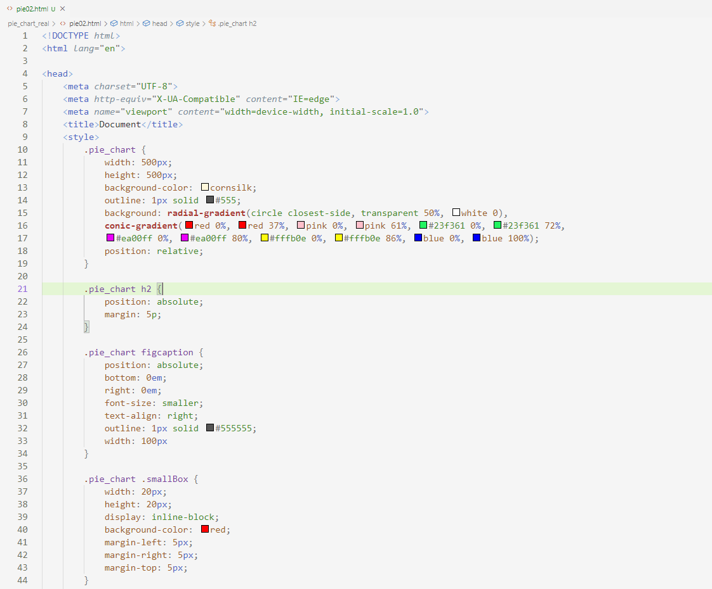
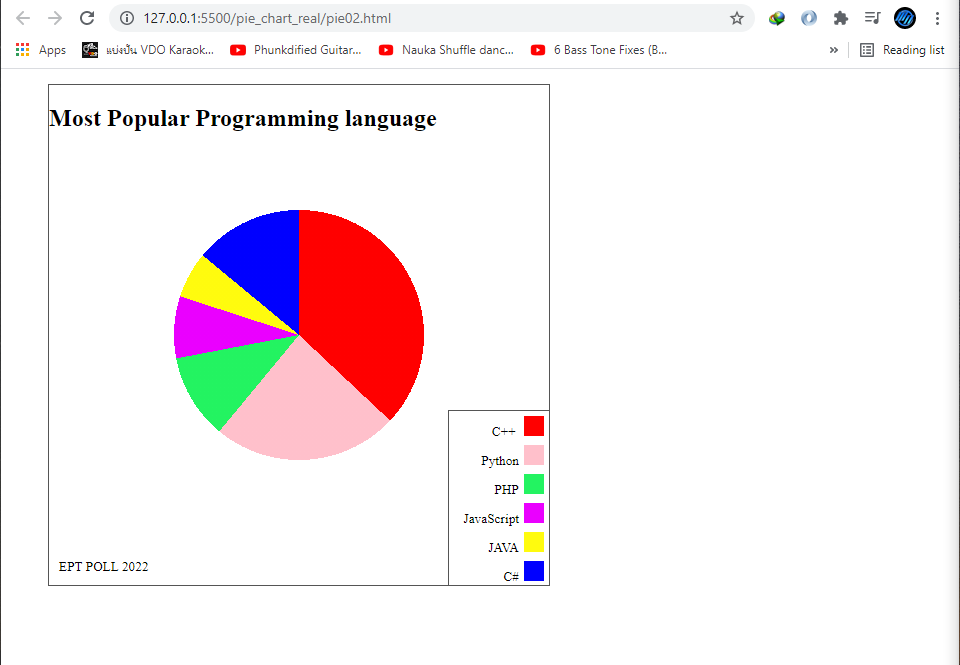
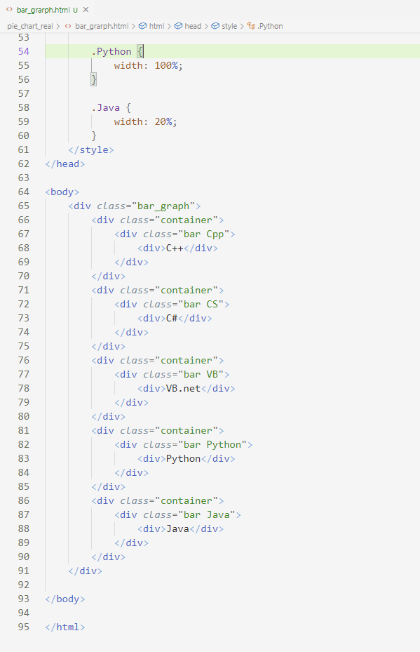
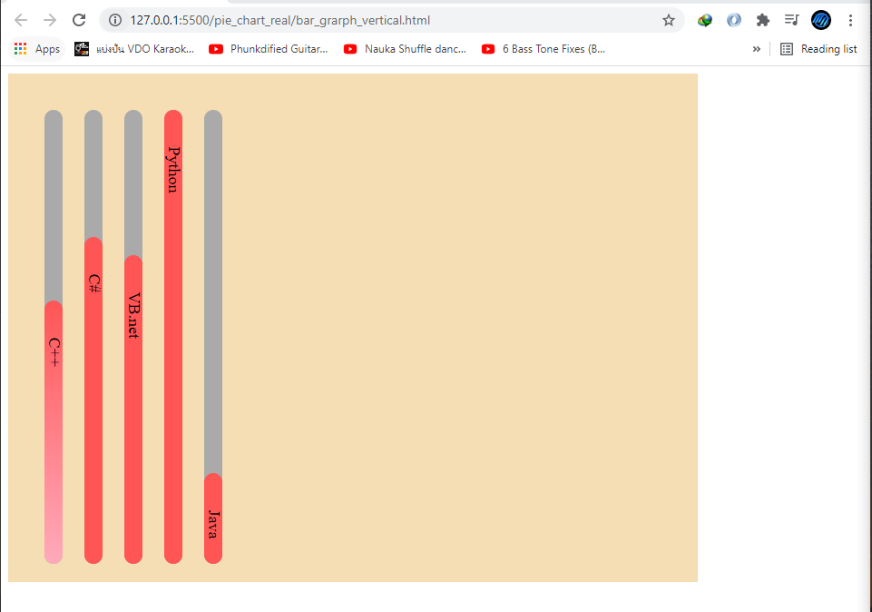

เราสามารถสร้าง graph พาย หรือ กราฟแท่งได้โดยการใช้ css โดยวิธีการมีดังนี้ ในตัวอย่างแรกจะเป็นกราฟพายก่อน โดยมีโค้ดตามรูปด้านล่าง
เราจะมี class ที่ชื่อ pie_chart ด้านในมีขนาด 500 x 500 px จากนั้นได้เพิ่ม background radial-gradient ซึ่งเป็นตัวที่กำหนดขนาดของกราฟเราจะจุดศูนย์กลางโดย circle closest-side หมายถึงให้มีรูปร่างเป็นวงกลม และ transparent 50% คือให้มีขนาด 50% จากตัวแม่ และใส่สีขาวเข้าไป ต่อมาคือ conic-gradient ใช้แทนสี chart ของกราฟแต่ละอันโดยคิดเป็นเปอร์เซ็นต์จาก 0 – 100 ถ้าอยากได้ เปอร์เซ็น๖ที่ต้องการต้องหลักลบกับขนาดของกราฟด้านหน้าไปเรื่อยๆ ส่วนโค้อื่นๆเพื่อองค์ประกอบที่สวยงามและ ได้ผลลัพธิ์ออกมาดังนี้
ต่อไปจะเป็นกราฟแท่งแนวนอน โดยมีโค้ตามรูปด้านล่างดังนี้
ในโค้ด html จะเห็นว่ามี class container ซึ่งทำหน้าที่เป็นขนาดของกราฟ และด้านในจะมี class bar ตามด้วย option ต่างๆ

จากนั้นโค้ด้านล่างที่เป็น css จะเห็นได้ว่าเพียงแค่ปรับขนาด width ของ class ที่เป็น option ของ bar ตามต้องการและผลลัพธิ์ที่ได้จะเป็นกราฟแทงแนวนอนดังรูปด้านล่าง

และสุดท้ายเป็นตัวอย่างการส้รางกราฟแนวตั้ง ซึ่งสังเกตดูโค้ด html จะเห็นได้ว่าเหมือนกับโค้ดกราฟแนวนอนทุกประการ


ซึ่งส่วนที่แตกต่างมีเล็กน้อยคือ css ในโค้ดด้านล่างจะเห็นว่าเพียงแค่ transform: rotate(90deg) หรือทำการหมุน 90 องศา และปรับเปลี่ยนจากค่า width เป็นค่า height แทนเท่านี้ก็ได้ผลลัพธิ์ที่ต้องการแล้ว
รูปด้านล่างคือผลลัพธิ์ที่ได้จากโค้ดด้านบน
และนอกจากสร้างเองแล้วเรายังสามารถใช้บริการสร้างกราฟจาก google chart ได้อีกด้วย โดยเราจะทำการทดลอง copy โค้ด example มาลองใช้ซึ่งในโค้ดจะเห็นว่ามีการใช้ cdn ที่เป็น file.js ก่อนถึงจะใช้ได้และ จะมี function ด้านในสารถที่จะแก้ไขค่าที่เราต้องการได้จากนั้นก็ทำการแสดงผลบน div อีกที

ภาพด้านล่างคือผลลัพธิ์ที่ได้จากโค้ดเป็น pie-chart แบบ 3D นอกจากตัวอย่างที่ว่านี้ยังมีกราฟอีกหลายรูปแบบให้ทดลองใช้สามารถเข้าไปดูได้ตาม url นี้ https://developers.google.com/chart/interactive/docs